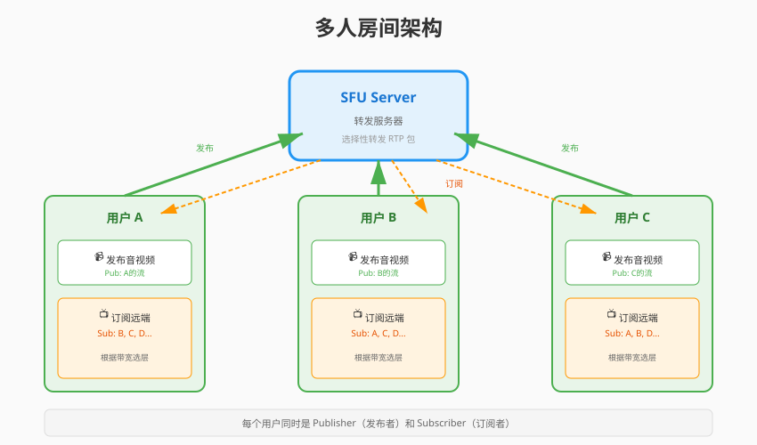
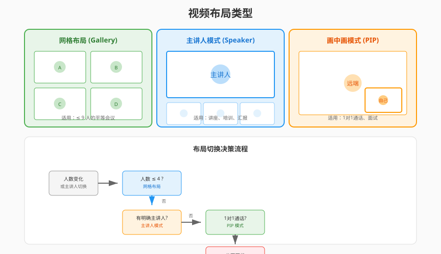
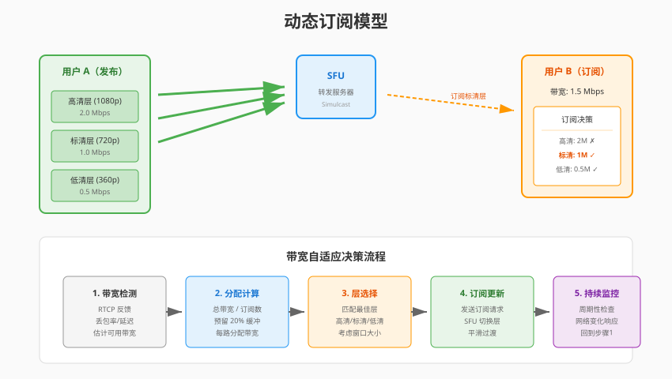

音视频开发实战
第23章：多人房间客户端
本章目标：实现多人视频会议客户端，掌握多路视频管理、动态订阅和房间状态处理。
在前面的章节中，我们已经掌握了 P2P 通话（Ch18）、WebRTC 连接（Ch19-Ch20）和 SFU 服务器（Ch21）。现在要把这些技术组合起来，实现一个真正的多人会议系统。
本章你将学习： - 多人房间的架构设计（发布/订阅模型） - 多路视频的渲染布局（网格/主讲人模式） - 动态订阅策略（按需接收、带宽管理） - 房间事件处理（用户进出、音视频状态变化）
学习本章后，你将能够： - 设计多人会议的客户端架构 - 实现自适应的视频布局 - 优化多路视频的带宽使用 - 处理复杂的房间状态同步
目录
1. 多人房间架构
1.1 从 P2P 到多人
P2P（一对一）：
用户 A ←────WebRTC────→ 用户 B多人会议（SFU 架构）：
┌─────────┐
┌───────────→│ SFU │←───────────┐
│ │ Server │ │
│ └────┬────┘ │
┌───┴───┐ ┌────┴────┐ ┌───┴───┐
│用户 A │ │ 用户 B │ │ 用户 C │
└───┬───┘ └────┬────┘ └───┬───┘
│ │ │
发布流 订阅 A/C 订阅 A/B关键区别： - P2P：每个连接只有一个远端 - 多人：每个连接有多个远端，需要管理多路流
1.2 发布/订阅模型

角色定义： - Publisher（发布者）：发送音视频流到 SFU - Subscriber（订阅者）：从 SFU 接收其他用户的流 - 一个用户可以同时是发布者和订阅者
工作流程：
1. 用户 A 加入房间
├── 发布本地音视频（Publisher）
└── 订阅房间内的其他用户（Subscriber）
2. 用户 B 加入房间
├── 发布本地音视频
└── 订阅用户 A 的流
3. 用户 A 收到通知
└── 订阅用户 B 的流1.3 客户端架构设计
┌─────────────────────────────────────────────────┐
│ UI 层 │
│ ┌──────────────┐ ┌──────────────────────────┐ │
│ │ 视频网格布局 │ │ 控制面板 │ │
│ └──────────────┘ └──────────────────────────┘ │
├─────────────────────────────────────────────────┤
│ 业务逻辑层 │
│ ┌───────────┐ ┌───────────┐ ┌─────────────┐ │
│ │ RoomManager│ │ Layout │ │ EventHandler│ │
│ └───────────┘ └───────────┘ └─────────────┘ │
├─────────────────────────────────────────────────┤
│ WebRTC 层 │
│ ┌───────────┐ ┌───────────┐ ┌─────────────┐ │
│ │ PeerConn │ │ TrackMgr │ │ Subscribe │ │
│ └───────────┘ └───────────┘ └─────────────┘ │
├─────────────────────────────────────────────────┤
│ 网络层 │
│ ┌───────────┐ ┌───────────┐ │
│ │ Signaling│ │ SFU │ │
│ │ (WebSocket)│ │ (RTP) │ │
│ └───────────┘ └───────────┘ │
└─────────────────────────────────────────────────┘核心模块职责：
| 模块 | 职责 |
|---|---|
| RoomManager | 房间生命周期、成员管理 |
| Layout | 视频布局计算、窗口分配 |
| TrackMgr | 音视频轨道管理、设备控制 |
| Subscribe | 订阅管理、带宽分配 |
| EventHandler | 房间事件处理、状态同步 |
2. 多路视频渲染
2.1 视频布局策略

常见布局模式：
1) 网格布局（Gallery View）
┌────────┬────────┬────────┐
│ A │ B │ C │
├────────┼────────┼────────┤
│ D │ E │ F │
└────────┴────────┴────────┘适用：平等会议，所有人可见
2) 主讲人模式（Speaker View）
┌─────────────────────────┐
│ │
│ 主讲人 │
│ (大图) │
│ │
├───────┬───────┬─────────┤
│ A │ B │ ... │
└───────┴───────┴─────────┘适用：讲座、培训
3) 画中画模式（PIP）
┌─────────────────────────┐
│ │
│ 主讲人 │
│ │
│ ┌─────┐ │
│ │自己 │ │
│ └─────┘ │
└─────────────────────────┘适用：自己也需要看到
2.2 布局计算算法
// layout_manager.h
#pragma once
#include <vector>
#include <math>
namespace live {
struct VideoCell {
int x, y; // 位置
int width, height; // 大小
std::string user_id; // 用户ID
bool is_speaking; // 是否正在说话
};
enum class LayoutMode {
GRID, // 网格
SPEAKER, // 主讲人
PIP // 画中画
};
class LayoutManager {
public:
LayoutManager(int container_width, int container_height);
// 设置布局模式
void SetMode(LayoutMode mode);
// 计算布局
std::vector<VideoCell> CalculateLayout(
const std::vector<std::string>& user_ids,
const std::string& speaker_id);
// 获取最佳行列数
static void GetGridSize(int count, int* rows, int* cols);
private:
std::vector<VideoCell> CalculateGrid(
const std::vector<std::string>& user_ids);
std::vector<VideoCell> CalculateSpeaker(
const std::vector<std::string>& user_ids,
const std::string& speaker_id);
std::vector<VideoCell> CalculatePIP(
const std::vector<std::string>& user_ids);
int container_width_;
int container_height_;
LayoutMode mode_;
static constexpr int kMinCellWidth = 200;
static constexpr int kMinCellHeight = 150;
};
} // namespace live// layout_manager.cpp
#include "layout_manager.h"
namespace live {
LayoutManager::LayoutManager(int container_width, int container_height)
: container_width_(container_width)
, container_height_(container_height)
, mode_(LayoutMode::GRID) {}
void LayoutManager::SetMode(LayoutMode mode) {
mode_ = mode;
}
std::vector<VideoCell> LayoutManager::CalculateLayout(
const std::vector<std::string>& user_ids,
const std::string& speaker_id) {
switch (mode_) {
case LayoutMode::GRID:
return CalculateGrid(user_ids);
case LayoutMode::SPEAKER:
return CalculateSpeaker(user_ids, speaker_id);
case LayoutMode::PIP:
return CalculatePIP(user_ids);
}
return {};
}
void LayoutManager::GetGridSize(int count, int* rows, int* cols) {
// 计算最接近正方形的行列数
*cols = static_cast<int>(std::ceil(std::sqrt(count)));
*rows = static_cast<int>(std::ceil(static_cast<double>(count) / *cols));
}
std::vector<VideoCell> LayoutManager::CalculateGrid(
const std::vector<std::string>& user_ids) {
std::vector<VideoCell> cells;
int count = static_cast<int>(user_ids.size());
if (count == 0) return cells;
int rows, cols;
GetGridSize(count, &rows, &cols);
// 计算每个单元格大小
int cell_width = container_width_ / cols;
int cell_height = container_height_ / rows;
// 确保最小尺寸
if (cell_width < kMinCellWidth || cell_height < kMinCellHeight) {
// 需要滚动，这里简化处理
cell_width = std::max(cell_width, kMinCellWidth);
cell_height = std::max(cell_height, kMinCellHeight);
}
// 分配位置
for (int i = 0; i < count; ++i) {
VideoCell cell;
cell.user_id = user_ids[i];
cell.col = i % cols;
cell.row = i / cols;
cell.x = cell.col * cell_width;
cell.y = cell.row * cell_height;
cell.width = cell_width;
cell.height = cell_height;
cell.is_speaking = false;
cells.push_back(cell);
}
return cells;
}
std::vector<VideoCell> LayoutManager::CalculateSpeaker(
const std::vector<std::string>& user_ids,
const std::string& speaker_id) {
std::vector<VideoCell> cells;
if (user_ids.empty()) return cells;
// 主讲人占 70% 高度
int main_height = static_cast<int>(container_height_ * 0.7);
int thumb_height = container_height_ - main_height;
// 主讲人
auto speaker_it = std::find(user_ids.begin(), user_ids.end(), speaker_id);
if (speaker_it != user_ids.end()) {
VideoCell main;
main.user_id = speaker_id;
main.x = 0;
main.y = 0;
main.width = container_width_;
main.height = main_height;
main.is_speaking = true;
cells.push_back(main);
}
// 缩略图
int other_count = static_cast<int>(user_ids.size()) - 1;
if (other_count > 0) {
int thumb_width = container_width_ / other_count;
int idx = 0;
for (const auto& user_id : user_ids) {
if (user_id == speaker_id) continue;
VideoCell thumb;
thumb.user_id = user_id;
thumb.x = idx * thumb_width;
thumb.y = main_height;
thumb.width = thumb_width;
thumb.height = thumb_height;
thumb.is_speaking = false;
cells.push_back(thumb);
++idx;
}
}
return cells;
}
} // namespace live2.3 SDL2 多窗口渲染
// multi_video_renderer.h
#pragma once
#include <SDL2/SDL.h>
#include <map>
#include <string>
#include "layout_manager.h"
namespace live {
class MultiVideoRenderer {
public:
MultiVideoRenderer(int width, int height);
~MultiVideoRenderer();
bool Initialize();
void Shutdown();
// 更新布局
void UpdateLayout(const std::vector<VideoCell>& cells);
// 渲染视频帧
void RenderFrame(const std::string& user_id,
const uint8_t* y_plane, const uint8_t* u_plane,
const uint8_t* v_plane,
int y_pitch, int u_pitch, int v_pitch,
int width, int height);
// 渲染所有（包括背景、边框等）
void Render();
private:
struct VideoTexture {
SDL_Texture* texture = nullptr;
int width = 0;
int height = 0;
std::string user_id;
VideoCell cell;
};
SDL_Window* window_ = nullptr;
SDL_Renderer* renderer_ = nullptr;
std::map<std::string, VideoTexture> textures_;
std::vector<VideoCell> current_layout_;
int container_width_;
int container_height_;
};
} // namespace live3. 动态订阅策略
3.1 为什么需要动态订阅？
问题： - 10 人会议，每人发送 2Mbps - 如果订阅所有 9 路流，需要 18Mbps 下行带宽 - 大部分用户没有这么高的带宽
解决方案：动态订阅

3.2 订阅策略类型
| 策略 | 描述 | 适用场景 |
|---|---|---|
| 全订阅 | 订阅所有参与者的流 | ≤4 人会议 |
| 按需订阅 | 只订阅正在说话的人 | 大型会议 |
| 分页订阅 | 订阅当前页的人 | webinars |
| 分层订阅 | 根据 Simulcast 层选择质量 | 自适应带宽 |
3.3 Simulcast 分层订阅
SFU 支持 Simulcast（分层编码），发送端同时发送多路质量：
发送端:
├── 高清层 (1080p) ──┐
├── 标清层 (720p) ──┼──→ SFU 选择一路转发给订阅者
└── 低清层 (360p) ──┘订阅决策：
enum class SimulcastLayer {
HIGH, // 1080p, 2Mbps
MEDIUM, // 720p, 1Mbps
LOW // 360p, 0.5Mbps
};
class SubscriptionManager {
public:
// 根据带宽和窗口大小选择层
SimulcastLayer SelectLayer(
int available_bandwidth, // kbps
int video_width, // 渲染窗口宽度
const std::string& user_id
) {
// 1. 带宽检查
if (available_bandwidth < 600) {
return SimulcastLayer::LOW;
} else if (available_bandwidth < 1200) {
return SimulcastLayer::MEDIUM;
}
// 2. 窗口大小检查
if (video_width < 480) {
return SimulcastLayer::LOW;
} else if (video_width < 960) {
return SimulcastLayer::MEDIUM;
}
return SimulcastLayer::HIGH;
}
// 订阅指定层
void SubscribeLayer(const std::string& user_id, SimulcastLayer layer);
// 取消订阅
void Unsubscribe(const std::string& user_id);
private:
struct Subscription {
std::string user_id;
SimulcastLayer current_layer;
bool audio_enabled;
bool video_enabled;
};
std::map<std::string, Subscription> subscriptions_;
int total_bandwidth_used_ = 0;
static constexpr int kBandwidthReserve = 200; // 保留 200kbps
};3.4 带宽自适应
class BandwidthEstimator {
public:
// 基于 RTCP Receiver Report 估计带宽
void OnReceiverReport(const ReceiverReport& rr);
// 获取估计带宽 (kbps)
int GetEstimatedBandwidth() const {
return estimated_bandwidth_;
}
// 检测拥塞
bool IsCongested() const {
return packet_loss_rate_ > 0.05; // 5% 丢包视为拥塞
}
private:
int estimated_bandwidth_ = 2000; // 初始估计 2Mbps
float packet_loss_rate_ = 0.0;
int rtt_ms_ = 50;
// 指数移动平均系数
static constexpr float kAlpha = 0.8;
};
void BandwidthEstimator::OnReceiverReport(const ReceiverReport& rr) {
// 更新丢包率
packet_loss_rate_ = rr.fraction_lost / 255.0f;
// 基于丢包调整带宽估计
if (packet_loss_rate_ > 0.1) {
// 严重拥塞，大幅降低
estimated_bandwidth_ = static_cast<int>(
estimated_bandwidth_ * 0.7);
} else if (packet_loss_rate_ > 0.02) {
// 轻微拥塞，适当降低
estimated_bandwidth_ = static_cast<int>(
estimated_bandwidth_ * 0.9);
} else {
// 网络良好，可以尝试增加
estimated_bandwidth_ = static_cast<int>(
estimated_bandwidth_ * 1.05);
}
// 限制范围
estimated_bandwidth_ = std::clamp(estimated_bandwidth_, 200, 10000);
}4. 房间事件处理
4.1 房间状态模型
Room State:
├── room_id: string
├── local_user: UserInfo
├── remote_users: Map<user_id, UserInfo>
├── connections: Map<user_id, PeerConnection>
└── layout: LayoutState
UserInfo:
├── user_id: string
├── nickname: string
├── has_audio: bool
├── has_video: bool
├── is_speaking: bool
├── is_screen_sharing: bool
└── join_time: timestamp4.2 事件类型
| 事件 | 描述 | 处理动作 |
|---|---|---|
user-joined |
新用户加入 | 创建订阅、添加视频格子 |
user-left |
用户离开 | 关闭订阅、移除视频格子 |
stream-added |
用户发布流 | 订阅流、绑定渲染 |
stream-removed |
用户停止发布 | 取消订阅 |
audio-status-changed |
音频开关 | 更新 UI 状态 |
video-status-changed |
视频开关 | 更新 UI 状态 |
speaking-changed |
说话状态 | 高亮显示 |
active-speaker |
当前主讲人 | 切换布局 |
4.3 事件处理器实现
// room_event_handler.h
#pragma once
#include <functional>
#include <json/json.h>
namespace live {
enum class RoomEventType {
USER_JOINED,
USER_LEFT,
STREAM_ADDED,
STREAM_REMOVED,
AUDIO_STATUS_CHANGED,
VIDEO_STATUS_CHANGED,
SPEAKING_CHANGED,
ACTIVE_SPEAKER_CHANGED,
CONNECTION_STATE_CHANGED,
ERROR
};
struct RoomEvent {
RoomEventType type;
std::string user_id;
Json::Value data;
};
class RoomEventHandler {
public:
using EventCallback = std::function<void(const RoomEvent&)>;
void RegisterCallback(RoomEventType type, EventCallback callback);
void HandleEvent(const RoomEvent& event);
// 具体事件处理
void OnUserJoined(const std::string& user_id, const Json::Value& user_info);
void OnUserLeft(const std::string& user_id);
void OnStreamAdded(const std::string& user_id, const std::string& stream_type);
void OnStreamRemoved(const std::string& user_id);
void OnSpeakingChanged(const std::string& user_id, bool is_speaking);
void OnActiveSpeakerChanged(const std::string& user_id);
private:
std::map<RoomEventType, std::vector<EventCallback>> callbacks_;
};
} // namespace live// room_event_handler.cpp
#include "room_event_handler.h"
namespace live {
void RoomEventHandler::RegisterCallback(RoomEventType type,
EventCallback callback) {
callbacks_[type].push_back(callback);
}
void RoomEventHandler::HandleEvent(const RoomEvent& event) {
auto it = callbacks_.find(event.type);
if (it != callbacks_.end()) {
for (const auto& callback : it->second) {
callback(event);
}
}
}
void RoomEventHandler::OnUserJoined(const std::string& user_id,
const Json::Value& user_info) {
RoomEvent event;
event.type = RoomEventType::USER_JOINED;
event.user_id = user_id;
event.data = user_info;
HandleEvent(event);
LOG_INFO("User joined: %s, nickname: %s",
user_id.c_str(),
user_info["nickname"].asString().c_str());
}
void RoomEventHandler::OnUserLeft(const std::string& user_id) {
RoomEvent event;
event.type = RoomEventType::USER_LEFT;
event.user_id = user_id;
HandleEvent(event);
LOG_INFO("User left: %s", user_id.c_str());
}
void RoomEventHandler::OnSpeakingChanged(const std::string& user_id,
bool is_speaking) {
RoomEvent event;
event.type = RoomEventType::SPEAKING_CHANGED;
event.user_id = user_id;
event.data["is_speaking"] = is_speaking;
HandleEvent(event);
LOG_DEBUG("User %s speaking state: %s",
user_id.c_str(), is_speaking ? "true" : "false");
}
void RoomEventHandler::OnActiveSpeakerChanged(const std::string& user_id) {
RoomEvent event;
event.type = RoomEventType::ACTIVE_SPEAKER_CHANGED;
event.user_id = user_id;
HandleEvent(event);
LOG_INFO("Active speaker changed to: %s", user_id.c_str());
}
} // namespace live4.4 信令消息格式
// 用户加入通知
{
"type": "user-joined",
"user_id": "user_123",
"nickname": "张三",
"timestamp": 1699000000000
}
// 流发布通知
{
"type": "stream-added",
"user_id": "user_123",
"stream_id": "stream_456",
"audio": true,
"video": true,
"simulcast": ["high", "medium", "low"]
}
// 说话检测通知
{
"type": "speaking-changed",
"user_id": "user_123",
"is_speaking": true,
"audio_level": 0.75
}
// 订阅请求
{
"type": "subscribe",
"target_user_id": "user_123",
"audio": true,
"video": true,
"layer": "medium"
}5. 音频管理
5.1 客户端音频混音
多人会议中，如果同时播放多个远端音频，需要混音处理：
class AudioMixer {
public:
// 添加音频源
void AddSource(const std::string& user_id);
// 移除音频源
void RemoveSource(const std::string& user_id);
// 输入音频帧
void PushAudio(const std::string& user_id,
const int16_t* pcm_data,
int samples);
// 获取混音后的音频
void GetMixedAudio(int16_t* output, int samples);
private:
struct AudioSource {
std::queue<std::vector<int16_t>> buffer;
float volume = 1.0f;
bool muted = false;
};
std::map<std::string, AudioSource> sources_;
std::mutex mutex_;
};
void AudioMixer::GetMixedAudio(int16_t* output, int samples) {
std::lock_guard<std::mutex> lock(mutex_);
// 清零输出
std::fill(output, output + samples, 0);
// 混音
for (auto& [user_id, source] : sources_) {
if (source.muted || source.buffer.empty()) continue;
auto& frame = source.buffer.front();
int frame_samples = static_cast<int>(frame.size());
int mix_samples = std::min(samples, frame_samples);
for (int i = 0; i < mix_samples; ++i) {
// 简单叠加（实际需要溢出处理）
int32_t sum = output[i] + static_cast<int32_t>(
frame[i] * source.volume);
output[i] = static_cast<int16_t>(
std::clamp(sum, -32768, 32767));
}
source.buffer.pop();
}
}5.2 音量检测（VU Meter）
class VolumeDetector {
public:
// 计算音频帧的 RMS 音量
float CalculateVolume(const int16_t* pcm_data, int samples) {
double sum_squares = 0.0;
for (int i = 0; i < samples; ++i) {
sum_squares += pcm_data[i] * pcm_data[i];
}
double rms = std::sqrt(sum_squares / samples);
// 归一化到 0-1
return static_cast<float>(
std::min(rms / 32768.0, 1.0));
}
// 检测是否正在说话（阈值检测）
bool IsSpeaking(const int16_t* pcm_data, int samples) {
float volume = CalculateVolume(pcm_data, samples);
// 应用平滑
smoothed_volume_ = smoothed_volume_ * 0.8f + volume * 0.2f;
// 迟滞比较，避免抖动
if (smoothed_volume_ > kSpeakingThreshold) {
is_speaking_ = true;
} else if (smoothed_volume_ < kSpeakingThreshold * 0.7f) {
is_speaking_ = false;
}
return is_speaking_;
}
private:
float smoothed_volume_ = 0.0f;
bool is_speaking_ = false;
static constexpr float kSpeakingThreshold = 0.05f;
};6. 本章总结
6.1 核心概念回顾
多人会议客户端技术栈：
┌─────────────────────────────────────────┐
│ 布局管理（网格/主讲人/PIP） │
├─────────────────────────────────────────┤
│ 动态订阅（Simulcast 层选择） │
├─────────────────────────────────────────┤
│ 带宽自适应（RTCP 反馈） │
├─────────────────────────────────────────┤
│ 事件处理（用户/流/状态） │
├─────────────────────────────────────────┤
│ 音频混音 + 音量检测 │
├─────────────────────────────────────────┤
│ WebRTC 连接管理 │
└─────────────────────────────────────────┘6.2 关键学习点
- 发布/订阅模型：灵活控制接收哪些流
- 动态布局：根据人数和模式自动调整
- 带宽管理：Simulcast + 自适应层选择
- 事件驱动：房间状态变化及时响应
- 音频处理：混音 + 说话检测
6.3 与下一章的衔接
本章完成了客户端的多人会议功能。但要支持更多用户（如 100+ 人），单靠 SFU 还不够，需要考虑 MCU 混音混画 来降低下行带宽。
下一章 MCU 混音混画详解 将介绍服务端如何混合多路音视频，让每个人都能以较低带宽观看统一画面。
课后思考
布局算法优化：当用户超过 16 人时，网格布局需要分页或滚动。如何设计合理的分页策略？
带宽分配：假设总带宽 2Mbps，房间内 6 个远端用户，如何分配每个人的订阅质量？是平均分配还是按需分配？
说话检测延迟：说话检测通常有 100-200ms 的检测延迟，如何让用户感知不到切换主讲人的延迟？
音频混音性能：10 人会议意味着 10 路音频混音。如何优化混音算法以降低 CPU 占用？（提示：只混活跃说话者）